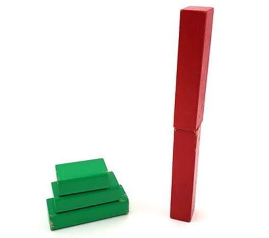

سرگرمی:
کیا آپ بلبلا پکڑ سکتے ہیں؟
خلاصہ:
تعارف:
کیا آپ نے کبھی بلبلے کو پوپ کیے بغیر پکڑنے کی کوشش کی ہے؟ یہ مشکل ہے! کامیابی سے بلبلے کو پکڑنے کے لیے آپ کون سے مواد استعمال کر سکتے ہیں؟ کیا کچھ مواد دوسروں سے بہتر کام کرتے ہیں؟ یہ جاننے کے لیے اس سرگرمی کو آزمائیں۔
مواد:
- بلبلا حل۔ آپ کچھ خرید سکتے ہیں یا پانی (ترجیحا طور پر ڈسٹل)، ڈش صابن، اور گلیسرین یا مکئی کے شربت سے گھر پر خود بنا سکتے ہیں۔
- اگر آپ اپنا بناتے ہیں تو آپ کے بلبلے کا محلول رکھنے کے لیے چھوٹا پیالہ یا کنٹینر
- بلبلا چھڑی
- جانچنے کے لیے مختلف مواد جیسے ایلومینیم فوائل، ویکس پیپر، پرنٹر پیپر، پلاسٹک کی لپیٹ، لکڑی، پلاسٹک کے تھیلے یا کھانے کے ذخیرہ کرنے کے برتن، دھاتی برتن اور پین، میزیں، کاؤنٹر ٹاپس وغیرہ۔ آپ کوئی بھی ایسا مواد آزما سکتے ہیں جو آپ کو آس پاس مل سکے۔ آپ کا گھر!
- نل کا پانی
- کاغذ کے تولیے۔
تیاری کا کام:
اپنے بلبلے کا حل خود بنانے کے لیے، 1 کپ پانی میں 2 چمچ ڈش صابن اور 1 چمچ گلیسرین یا کارن سیرپ ملا دیں۔
مختلف مواد کی چادریں کاٹیں جن کی آپ جانچ کرنا چاہتے ہیں۔ انہیں ایک ہموار سطح پر رکھیں، ترجیحا گھر کے اندر۔ تیز ہوا کے دن اس پروجیکٹ کو باہر کرنا مشکل ہوگا۔
طریقہ کار:
- اپنے بلبلے کی چھڑی کو اپنے بلبلے کے محلول میں ڈبوئیں اور کچھ بلبلوں کو اپنے مواد کی پہلی شیٹ کی طرف آہستہ سے اڑا دیں۔ انہیں اس پر اترنے کی کوشش کریں اور اس سے گزرنے سے گریز کریں۔ اس میں کچھ مشق لگ سکتی ہے، لہذا اسے چند بار آزمائیں۔ جب بلبلے سطح سے ٹکراتے ہیں تو کیا ہوتا ہے؟
- اپنے ہر دوسرے مواد پر بلبلوں کو اڑانے کی کوشش کریں۔
کیا بلبلوں میں سے کوئی بھی بغیر پاپنگ کے اترتا ہے؟
- ایک کاغذی تولیہ گیلا کریں اور ہر سطح پر پانی کی پتلی تہہ کو صاف کرنے کے لیے اس کا استعمال کریں۔ نوٹ: ہو سکتا ہے آپ اس حصے کو کچھ خاص مواد، جیسے لکڑی یا فرنیچر کے ساتھ نہیں کرنا چاہیں، کیونکہ پانی انہیں نقصان پہنچا سکتا ہے۔ اگر آپ کو یقین نہیں ہے تو کسی بالغ سے چیک کریں۔
- ہر سطح پر بلبلوں کو دوبارہ اڑانے کی کوشش کریں۔ اب کیا ہوگا؟
- ایک نیا کاغذی تولیہ اپنے بلبلے کے محلول میں ڈبوئیں، اور ہر سطح پر اس کی ایک پتلی تہہ صاف کریں۔
- ہر سطح پر بلبلوں کو دوبارہ اڑا دیں۔
کیا بلبلے کسی بھی سطح پر چپک جاتے ہیں جہاں وہ پہلے پاپ ہوتے ہیں؟ کیا وہ اترنے کے بعد زیادہ دیر تک رہتے ہیں؟
سرگرمی:
کیا آپ کا دماغ بائیں یا دائیں ہے؟
خلاصہ:
تعارف:
اگر آپ اپنے دائیں ہاتھ سے لکھتے ہیں، تو آپ اپنے دائیں ہاتھ سے ڈرائنگ، گیند پھینکنے یا کھانا کھانے کو بھی ترجیح دے سکتے ہیں، لیکن کیا آپ نے کبھی سوچا ہے کہ کیا آپ کا دایاں پاؤں بھی آپ کے بائیں پاؤں سے زیادہ غالب ہے؟ آپ کی دائیں آنکھ اور کان کا کیا ہوگا - کیا آپ انہیں اپنے بائیں آنکھ سے زیادہ استعمال کرنا پسند کرتے ہیں؟ اس سرگرمی میں، آپ کو یہ پتہ چل جائے گا کہ آیا لوگوں میں ایک طرفہ پن ہے — یعنی، کیا وہ عام طور پر اپنے جسم کے ایک طرف سے سرگرمیاں کرنا پسند کرتے ہیں — اور یہ ان کے دماغ کے بارے میں کیا کہہ سکتا ہے۔
مواد:
- کاغذ
- قلم یا پنسل
- ایک سکہ
- کاغذ کے تولیے کی ٹیوب یا ٹوائلٹ پیپر ٹیوب
- ایک سمندری خول یا فون
- کم از کم 5 رضاکار
تیاری کا کام:
اپنے نتائج کو ریکارڈ کرنے کے لیے کاغذ کے ٹکڑے پر ایک چھوٹا ڈیٹا ٹیبل تیار کریں۔ کاغذ کے بائیں جانب نیچے جاتے ہوئے "ہاتھ،" "پاؤں،" "آنکھ" اور "کان" لکھیں۔ کاغذ کے اوپری حصے میں جا کر، اپنے رضاکاروں کے نام لکھیں۔
طریقہ کار:
- اپنے پہلے رضاکار سے کاغذ کے ٹکڑے پر اپنا نام لکھنے کو کہیں۔
وہ اپنا نام کس ہاتھ سے لکھتے ہیں؟
- رضاکار کے نام کے نیچے "ہاتھ" کے لیبل والی قطار میں اپنے ڈیٹا ٹیبل میں نتیجہ (یا تو "دائیں" یا "بائیں" لکھ کر) ریکارڈ کریں۔
- اپنے پہلے رضاکار کے سامنے براہ راست فرش پر ایک سکہ رکھیں۔ ان سے سکے پر قدم رکھنے کو کہیں۔ سکے پر قدم رکھنے کے لیے کون سا پاؤں استعمال ہوتا ہے؟ نتائج کو اپنے ڈیٹا ٹیبل میں "فٹ" قطار میں رضاکار کے نام کے نیچے ریکارڈ کریں۔
- اپنے پہلے رضاکار کو کاغذ کے تولیے کی ٹیوب یا ٹوائلٹ پیپر ٹیوب دیں اور ان سے کہیں کہ اس کے ذریعے کسی دور کی چیز کو دیکھیں۔ وہ ٹیوب کے ذریعے دیکھنے کے لیے کون سی آنکھ استعمال کرتے ہیں؟ نتائج کو اپنے ڈیٹا ٹیبل میں "آنکھ" کی قطار میں رضاکار کے نام کے نیچے ریکارڈ کریں۔
- اپنے پہلے رضاکار کو سمندری خول یا فون دیں اور ان سے اسے سننے کو کہیں۔ وہ شیل یا فون کس کان تک رکھتے ہیں؟
- رزلٹ کو اپنے ڈیٹا ٹیبل میں "Ear" کالم میں رضاکار کے نام کے نیچے ریکارڈ کریں۔
- اس عمل کو کم از کم چار دیگر رضاکاروں کے ساتھ دہرائیں۔ ہر بار نئے رضاکار کے نام کے تحت نتائج کو ریکارڈ کرنا یقینی بنائیں۔
- اپنے ڈیٹا ٹیبل کو دیکھیں، کیا آپ کے زیادہ رضاکار دائیں ہاتھ والے ہیں یا بائیں ہاتھ سے؟ دائیں پاؤں بمقابلہ بائیں پیر، دائیں آنکھ بمقابلہ بائیں آنکھ، اور دائیں کان والے بمقابلہ بائیں کان کے بارے میں کیا خیال ہے؟
کیا ایک طرف مجموعی طور پر دوسرے سے زیادہ عام ہے؟
- کتنے لوگ جو دائیں ہاتھ ہیں دائیں پاؤں والے بھی ہیں (اور اس کے برعکس)؟ دوسرے ممکنہ امتزاج کے بارے میں کیا خیال ہے؟
آپ کے ڈیٹا کی بنیاد پر، کیا آپ کو لگتا ہے کہ لوگوں کی طرف داری ہے یا نہیں؟ کیوں؟
سرگرمی:
بلاک ٹاورز بنانا

خلاصہ:
تعارف:
اگر آپ نے کبھی بلاکس کے ساتھ ٹاور بنایا ہے، تو شاید آپ نے اسے گرا دیا ہے — یا تو جان بوجھ کر، یا حادثاتی طور پر۔ کبھی کبھی آپ کا ٹاور بہت لمبا اور ڈوب جاتا ہے، اور آپ اسے کھڑا نہیں رکھ سکتے! اس سرگرمی میں، آپ ان تجارتی معاہدوں کے بارے میں جانیں گے جو آپ کو ایک ٹاور کی تعمیر کے دوران کرنے کی ضرورت ہے جو لمبا اور مستحکم ہو۔
مواد:
- کھلونا گتے یا لکڑی کے بلاکس، یا گتے کے خالی ڈبوں کی ایک درجہ بندی (سیریل/ٹشو/جوتوں کے ڈبے وغیرہ)۔ پلاسٹک کے اسنیپ ٹوگیدر بلاکس کا استعمال نہ کریں۔
- اختیاری: کھڑے ہونے کے لیے کرسی، یا اپنے ٹاور کے اوپر بلاکس لگانے میں آپ کی مدد کے لیے ایک بالغ۔
- پنسل اور کاغذ
تیاری کا کام:
اس بات کو یقینی بنائیں کہ آپ کے پاس ایک اونچا ٹاور بنانے کے لیے کافی کھلی منزل ہے، اور یہ کہ اگر ٹاور گر جائے گا تو وہ کچھ نہیں ٹوٹے گا۔
طریقہ کار:
- شروع کرنے سے پہلے اپنے تمام بلاکس جمع کریں۔ شمار کریں کہ آپ کے پاس کتنے بلاکس ہیں، اور انہیں سائز کے حساب سے ترتیب دیں (جیسے چھوٹے، درمیانے اور بڑے ڈھیروں میں)۔
- بلاک ٹاور کے چند مختلف ڈیزائنوں کے خاکے بنائیں۔ ٹاورز کو زیادہ سے زیادہ اونچا بنانے کی کوشش کریں، لیکن ان کے مستحکم ہونے کا منصوبہ بھی بنائیں، تاکہ وہ آسانی سے گر نہ جائیں۔
- اپنے ٹاور ڈیزائن میں سے ایک بنانے کی کوشش کریں۔ اگر ٹاور آپ کی پہنچ سے بلند ہو جائے تو کرسی پر کھڑے ہو جائیں یا کسی بالغ سے مزید بلاکس شامل کرنے میں مدد کرنے کو کہیں۔ کیا آپ ٹاور کے گرنے سے پہلے تعمیر مکمل کر سکتے ہیں؟
- اگر آپ ٹاور کی تعمیر مکمل کرنے کا انتظام کرتے ہیں، تو اسے اپنی انگلی سے کچھ جگہوں پر آہستہ سے تھپتھپانے کی کوشش کریں۔ کیا ٹاور گر جاتا ہے؟
- اگر آپ کا ٹاور گر گیا تو اس کے بارے میں سوچیں کہ آپ اسے مزید مستحکم بنانے کے لیے کس طرح دوبارہ ڈیزائن کر سکتے ہیں۔ کیا آپ کو اس کو پورا کرنے کے لیے کچھ اونچائی قربان کرنے کی ضرورت ہے؟
- . اگر آپ کا ٹاور نہیں گرا تو حد کو دبائیں! کیا آپ اسے مستحکم رکھتے ہوئے اسے اور بھی اونچا بنا سکتے ہیں؟
- اپنے ٹاور کو اس وقت تک دہراتے رہیں (دوبارہ ڈیزائن اور دوبارہ تعمیر کریں) جب تک کہ یہ مستحکم نہ ہو- آپ اسے غیر مستحکم کیے بغیر اسے مزید اونچا نہیں بنا سکتے۔
سرگرمی:
کیچڑ بنانے کا طریقہ
خلاصہ:
تعارف:
یہ گویا ہے۔ یہ چپچپا ہے۔ یہ کیچڑ ہے! اس تیز اور آسان نسخے کے ساتھ اپنے گھر میں کیچڑ بنانا سیکھیں۔
مواد:
- دھونے کے قابل PVA اسکول گلو
- پانی
- بیکنگ سوڈا
- کانٹیکٹ لینس محلول (اجزاء میں بورک ایسڈ اور سوڈیم بوریٹ دونوں پر مشتمل ہونا چاہیے)
- فوڈ کلرنگ (اختیاری)
- ماپنے کے چمچ
- ماپنے کا کپ
- مکسنگ کٹورا
- اسپاتولا
- دوبارہ قابلِ استعمال پلاسٹک کے تھیلے یا کھانے کے ذخیرہ کرنے والے کنٹینرز
تیاری کا کام:
اس بات کو یقینی بنائیں کہ آپ کے پاس کام کی سطح صاف ہے، جیسے باورچی خانے کے کاؤنٹر ٹاپ، جو تھوڑا سا گندا ہو سکتا ہے۔
طریقہ کار:
- مکسنگ پیالے میں، 1/2 C پانی، 1/2 C گلو، اور کھانے کے رنگ کے چند قطرے اچھی طرح مکس کریں۔
- 1/2 چائے کا چمچ بیکنگ سوڈا شامل کریں اور مکمل طور پر مکس کریں۔
- 2 چمچ کانٹیکٹ لینس کا محلول شامل کریں اور اس وقت تک زور سے ہلائیں جب تک کہ مکسچر پیالے کے کناروں سے ہٹنے نہ لگے۔
جب آپ ہلاتے ہیں تو کیچڑ کی موٹائی کیسے بدلتی ہے؟
- کیچڑ کو 5-10 منٹ تک گوندھنے کے لیے اپنے ہاتھوں کا استعمال کریں جب تک کہ اس کی ساخت تبدیل نہ ہو جائے۔ پریشان نہ ہوں اگر کیچڑ بہت بہتی ہے اور پہلے آپ کے ہاتھوں سے چپک جاتی ہے۔ آپ کے ہاتھوں سے کیچڑ کو چھیلنا آسان ہو جائے گا کیونکہ یہ گاڑھا ہوتا جائے گا۔
جب آپ اسے گوندھتے ہیں تو کیچڑ کی ساخت کیسے بدل جاتی ہے؟
- اپنی کیچڑ کے ساتھ کھیلنے میں مزہ کریں!
جب آپ اپنی کیچڑ کو کھینچتے ہیں تو کیا ہوتا ہے؟ اسکوش کریں؟ اسے ایک گیند میں رول کریں اور اسے اچھالیں؟
سرگرمی:
ایک کاغذی راکٹ بنائیں
خلاصہ:
تعارف:
پھٹ پڑنا! کیا آپ نے کبھی کسی ماڈل یا کھلونا راکٹ کے ساتھ کھیلا ہے، یا ٹی وی پر اصلی راکٹ لانچ دیکھا ہے؟ اس پروجیکٹ میں آپ کاغذ سے سادہ راکٹ بنائیں گے اور انہیں پینے کے بھوسے میں اڑا کر لانچ کریں گے۔ کیا آپ وہ راکٹ بنا سکتے ہیں جو سب سے زیادہ دور اڑتا ہو؟
مواد:
- کاغذ کے دو ٹکڑے
- قینچی
- پینسل
- پینے کی نلی
- حکمران
- خالی جگہ جس میں آپ کے "راکٹ" کو لانچ کرنا ہے، جیسے کہ ایک بڑا کمرہ، دالان یا بیرونی جگہ جس میں ہوا نہیں ہے
- ماپنے والی ٹیپ (اختیاری)
طریقہ کار:
- کاغذ کے ایک ٹکڑے کو لمبائی اور چوڑائی کی طرف نصف میں کاٹ کر چار چھوٹے مستطیلوں میں کاٹ دیں۔ یہ آپ کو چار راکٹ بنانے کی اجازت دے گا۔
- کاغذ کے لمبے کنارے کے ساتھ پنسل کی لمبائی کے ساتھ ایک سلنڈر بنانے کے لیے کاغذ کے مستطیلوں میں سے ایک کو پنسل کے گرد لپیٹیں۔
- بند ہونے والے سلنڈر کو ٹیپ کریں تاکہ یہ کھل نہ جائے (لیکن اسے پنسل پر نہ لگائیں)۔
- سلنڈر کو پنسل سے سلائیڈ کریں۔ سلنڈر بند کے ایک سرے کو چوٹکی لگائیں اور اسے ٹیپ سے بند کریں۔ (یہ آپ کے راکٹ کا "سامنے" اختتام ہے۔) دوسرے سرے کو کھلا چھوڑ دیں۔ یہ آپ کا پہلا راکٹ ہوگا جس میں پنکھ نہیں ہوں گے۔
- اپنے سامنے کافی جگہ کے ساتھ — اور کوئی رکاوٹ نہیں، جیسے کہ فرنیچر یا لوگ — اپنا پہلا راکٹ لانچ کرنے کی تیاری کریں! اسے پینے کے تنکے کے اوپر سلائیڈ کریں۔ بھوسے کو آگے کی طرف رکھیں، پھر اس میں جتنی زور سے ہو سکے اڑا دیں۔ اپنے راکٹ کو اڑتے ہوئے دیکھیں۔
یہ کہاں تک جاتا ہے؟ کیا یہ سیدھا اڑتا ہے یا ہوا میں گرتا ہے؟
- اپنے راکٹ کو مزید چند بار لانچ کریں یہ دیکھنے کے لیے کہ آیا یہ اسی طرح اڑتا ہے۔ اگر آپ اپنے راکٹ کی پرواز کے فاصلوں کو ریکارڈ کرنا چاہتے ہیں، تو یقینی بنائیں کہ اسے ہر بار اسی جگہ سے لانچ کریں، اور ٹیپ کی پیمائش سے لینڈنگ کی جگہ کی پیمائش کریں۔
- پچھلے مراحل کے بعد ایک اور کاغذی راکٹ بنائیں۔ ایک سرے کو چوٹکی لگانا اور اسے بند کرنا یاد رکھیں۔
- اس راکٹ کے لیے، تاہم، آپ پنکھ بنائیں گے۔ کاغذ کے دوسرے ٹکڑے سے دو دائیں مثلث (ایک کونے میں 90 ڈگری کے زاویے کے ساتھ) کاٹ دیں۔ مثلث کے لمبے اطراف تقریباً آٹھ سینٹی میٹر ہونے چاہئیں۔ آپ ہر مثلث کو دو پنکھ بنانے کے لیے فولڈ کریں گے، تو آپ کے پاس کل چار پنکھ ہوں گے۔
- ایک لکیر کھینچیں جو ایک مثلث کو نصف میں تقسیم کرتی ہے (90-ڈگری کونے سے مثلث کے لمبے حصے کے درمیان تک)۔
- پہلی لائن کے متوازی دو لائنیں کھینچیں (ہر طرف ایک)، اس سے تقریباً پانچ ملی میٹر دور۔
- اب، ان دو لائنوں کے ساتھ مثلث کو اوپر جوڑ دیں۔ نتیجہ دو مثلث ہونا چاہئے جو ہوا میں چپکے ہوئے ہوں (پنکھوں)، ان کے درمیان ایک چپٹا حصہ جوڑتا ہو۔
- چپٹے حصے کو اپنے سلنڈر کی طرف، کھلے سرے (اپنے راکٹ کی بنیاد، یا نیچے) کی طرف ٹیپ کریں۔
- دوسرے مثلث کے لیے ان مراحل کو دہرائیں، اور اسے پہلے والے کے مخالف سمت پر اپنے سلنڈر پر ٹیپ کریں۔ نتیجہ چار پنکھوں کا ہونا چاہئے جو ایک "+" شکل بناتے ہیں جب آپ راکٹ کو کسی بھی سرے سے دیکھتے ہیں۔ اگر ضروری ہو تو، پنکھوں کو موڑیں تاکہ وہ ایک دوسرے سے 90 ڈگری کے فاصلے پر رہیں۔
- نئے راکٹ کو ڈرنکنگ اسٹرا پر سلائیڈ کریں اور اسے لانچ کریں۔
یہ راکٹ کتنی دور تک جاتا ہے؟ اس کی پرواز کا آپ کے پہلے فین لیس راکٹ سے کیا موازنہ ہے؟ کیا یہ دور تک جاتا ہے؟ کیا یہ گرتا ہے یا سیدھا اڑتا ہے؟ کیا آپ کو لگتا ہے کہ پنکھ آپ کے راکٹ کے استحکام میں مدد کرتے ہیں؟
- اسے مزید چند بار لانچ کریں۔ اگر آپ ہر راکٹ کی پرواز کے فاصلے کی پیمائش کر رہے ہیں، تو ٹیپ پیمائش کا استعمال کریں اور ریکارڈ کریں کہ اس نے کتنی دور تک پرواز کی۔
سرگرمی:
بہترین کاغذی پل بنائیں
خلاصہ:
- فعال وقت
10-20 منٹ
- کل پروجیکٹ کا وقت
10-20 منٹ
- بنیادی خیال
مادی خصوصیات، طاقت، وزن
تعارف:
پل تمام اشکال، سائز اور مواد میں آتے ہیں۔ ایک پل کو سب سے مضبوط کیا بناتا ہے؟ اس تفریحی سرگرمی میں معلوم کریں کہ جب آپ کاغذ کے ساتھ سادہ پل بناتے ہیں اور جانچتے ہیں کہ وہ کتنا وزن رکھ سکتے ہیں۔
مواد:
- دو موٹی کتابیں یا چھوٹے بکس
- کاغذ
- ٹیپ
- سکے یا دیگر چھوٹی بھاری چیزیں جو وزن کے طور پر استعمال کی جائیں (چھوٹی چٹانیں، نٹ اور بولٹ وغیرہ)
طریقہ کار:
- اپنی کتابوں کو تقریباً 10 انچ کے فاصلے پر رکھیں۔
- کتابوں پر کاغذ کا ایک ٹکڑا بچھا دیں۔
- کاغذ کے بیچ میں ایک پیسہ رکھیں۔ کیا ہوتا ہے؟ اگر "پل" نہیں گرتا ہے تو مزید پیسے شامل کرنے کی کوشش کریں۔
- کاغذ کے ٹکڑے کو نصف لمبائی کی طرف فولڈ کریں، اور دوبارہ کوشش کریں۔ کیا اس بار پل میں زیادہ پیسے ہیں؟
- اب کاغذ کو "چینل" کی شکل میں فولڈ کریں۔ کاغذ کو نصف لمبائی میں دو بار فولڈ کریں۔ پھر، دیواریں بنانے کے لیے کناروں کو جوڑ دیں۔ پل کو کھلنے سے روکنے کے لیے کناروں کو جگہ پر رکھنے کے لیے ٹیپ کا استعمال کریں۔
- پل کے بیچ میں ایک پیسہ رکھیں۔ ایک ایک وقت میں، پل کی لمبائی کے ساتھ پیسے جوڑتے رہیں۔ یہ نقل کرتا ہے کہ کس طرح حقیقی کاریں اور لوگ ایک پل کی لمبائی کے ساتھ پھیلے ہوئے ہیں۔ ان سب کو درمیان میں ایک دوسرے کے اوپر نہ لگائیں۔
- اگر آپ پورے پل کو بھرتے ہیں، تو پیسوں کی دوسری تہہ شروع کریں۔ پل کے گرنے تک پیسے ڈالتے رہیں۔
- اپنے پل کے لیے مختلف شکلوں کے ساتھ تجربہ کریں۔ مثال کے طور پر، آپ کاغذ کو نصف، بیس کی چوڑائی، یا دیواروں کی اونچائی میں جتنی بار فولڈ کرتے ہیں اسے تبدیل کرنے کی کوشش کریں۔
کون سی شکل سب سے مضبوط پل بناتی ہے؟